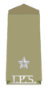
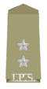
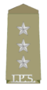
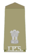
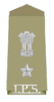
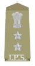
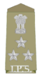
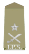
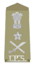

POST

Assistant Superintendent, or assistant superintendent of police (ASP)[I year of service]
- Assistant Superintendent, or assistant superintendent of police (ASP), was a rank used by police forces in the British Empire. It was usually the lowest rank that could be held by a European officer, most of whom joined the police at this rank. In the 20th century, it was in many territories opened to non-Europeans as well. Today, this rank is found throughout The Commonwealth in police ranking structures including the UK's Scotland Yard and the Royal Canadian Mounted Police and Commonwealth Caribbean states. The rank is above inspector (chief inspector) and below superintendent.
Assistant Superintendent, or assistant superintendent of police (ASP)[II year of service]
- Assistant Superintendent, or assistant superintendent of police (ASP), was a rank used by police forces in the British Empire. It was usually the lowest rank that could be held by a European officer, most of whom joined the police at this rank. In the 20th century, it was in many territories opened to non-Europeans as well. Today, this rank is found throughout The Commonwealth in police ranking structures including the UK's Scotland Yard and the Royal Canadian Mounted Police and Commonwealth Caribbean states. The rank is above inspector (chief inspector) and below superintendent.
Deputy superintendent, or deputy superintendent of police (DSP)
- Deputy superintendent, or deputy superintendent of police (DSP), was a rank used by police forces of the British Empire. In some territories it was called Deputy District Superintendent of police (DDSP).
The rank was usually confined to Europeans, and not all territories used it. The rank below was usually assistant superintendent and the rank above was (District) superintendent.
In India, the rank is assistant commissioner of police in commissionerate system, whereas at district level the rank is deputy superintendent of police. The rank of deputy superintendent (DSP) or assistant commissioner of police (ACP) was created in 1876 as the policy of Indianisation was introduced. Deputy superintendents or assistant commissioners of police are state police officers who belong to the provincial police forces, either direct entrants at that rank or promoted from inspector. Assistant commissioner of police, who are members of the provincial forces (equivalent rank deputy superintendents) are equal in every way to IPS (equivalent rank assistant superintendent of police) although paid slightly less and fill the same positions (sub divisional police officer). Deputy superintendents of police (assistant commissioner of police) who show potential could be promoted to the IPS after some limited years of service which varies from 8 to 15 years depending on the state.[1] In the states of Rajasthan and Uttar Pradesh, it is known as Circle Officer (CO). It is roughly analogous to the rank of chief inspector in the UK police services.
Assistant Superintendent, or assistant superintendent of police (ASP)
- Assistant Superintendent, or assistant superintendent of police (ASP), was a rank used by police forces in the British Empire. It was usually the lowest rank that could be held by a European officer, most of whom joined the police at this rank. In the 20th century, it was in many territories opened to non-Europeans as well. Today, this rank is found throughout The Commonwealth in police ranking structures including the UK's Scotland Yard and the Royal Canadian Mounted Police and Commonwealth Caribbean states. The rank is above inspector (chief inspector) and below superintendent.Assistant superintendent of police is still in use in India where the officer holding this rank is from Indian Police Service. However, assistant superintendent of police is a probationary rank and is worn by officers when under training at SVPNPA.
Deputy Commissioner of Police or Superintendent of Police.
- Superintendent (supt), often shortened to "super", is a rank in British police services and in most English-speaking Commonwealth nations. In many Commonwealth countries the full version is superintendent of police (SP). The rank is also still used in the former British Colony of Hong Kong.
In India, a district superintendent of police (SP) or deputy commissioner of police (DCP) heads the police force of a district. Superintendents of Police are officers of the Indian Police Service. Their rank badge is the state emblem above one star, although those selected for higher rank or with fifteen or more years' service wear the state emblem above two stars.[1] The rank below it is additional deputy commissioner of police (ADL.DCP) or additional superintendent of police (ASP), while the rank above it is senior superintendent of police (SSP) or deputy commissioner of police.In the state of Kerala, superintendents of police in charge of districts are called District Police chiefs.[2]
Deputy Commissioner of Police or Senior Superintendent of Police
- Superintendent (supt), often shortened to "super", is a rank in British police services and in most English-speaking Commonwealth nations. In many Commonwealth countries the full version is superintendent of police (SP). The rank is also still used in the former British Colony of Hong Kong.
In India, a district superintendent of police (SP) or deputy commissioner of police (DCP) heads the police force of a district. Superintendents of Police are officers of the Indian Police Service. Their rank badge is the state emblem above one star, although those selected for higher rank or with fifteen or more years' service wear the state emblem above two stars.[1] The rank below it is additional deputy commissioner of police (ADL.DCP) or additional superintendent of police (ASP), while the rank above it is senior superintendent of police (SSP) or deputy commissioner of police.In the state of Kerala, superintendents of police in charge of districts are called District Police chiefs.[2]
Additional Commissioner of Police or Deputy Inspector General of Police
- A deputy inspector general of police is a high ranking official position. It is considered as high rank in several countries.
Deputy inspector general of police or additional commissioner of police is a one-star rank in the Indian Police Service (IPS). The officer holding this rank is above a senior superintendent of police or deputy commissioner of police and under an inspector general of police or Joint Commissioner of Police.[1][2] It is roughly analogous to assistant chief constable in the UK.
Joint Commissioner of Police or Inspector General of Police
- IGP is a Gazetted officer of Indian Police Service. An IGP is generally incharge of a division in a state. A division means a group of Districts in a state.
Commissioner of Police (State) or Director General of Police
- In India, a District Superintendent of Police (SP) or Deputy Commissioner of Police (DCP) heads the police force of a district. Superintendents of Police are officers of the Indian Police Service. He is entrusted with the responsibility of maintaining law and order and related issues of a district of a state or a union territory of India. He is assisted by the officers of the State Police Service and other State Police officials. Their rank badge is the State Emblem above one star, although those selected for higher rank or with fifteen or more years' service wear the State Emblem above two stars. The rank below it is Additional Deputy Commissioner of Police (ADL.DCP) or Additional Superintendent of Police (ASP), while the rank above it is Senior Superintendent of Police (SSP) or Additional Commissioner of Police (ACP).